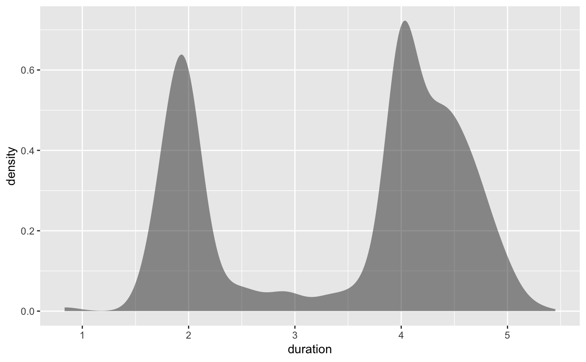
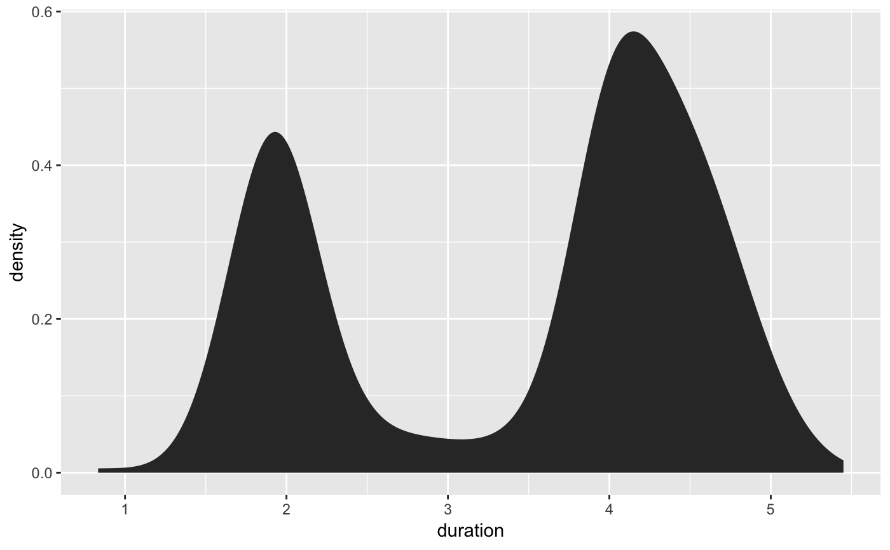

A kernel density estimate, useful for displaying the distribution of variables with underlying smoothness.
geom_bkde(mapping = NULL, data = NULL, stat = "bkde", position = "identity", bandwidth = NULL, range.x = NULL, na.rm = FALSE, show.legend = NA, inherit.aes = TRUE, ...) stat_bkde(mapping = NULL, data = NULL, geom = "area", position = "stack", kernel = "normal", canonical = FALSE, bandwidth = NULL, gridsize = 410, range.x = NULL, truncate = TRUE, na.rm = FALSE, show.legend = NA, inherit.aes = TRUE, ...)
Arguments
| mapping | Set of aesthetic mappings created by |
|---|---|
| data | The data to be displayed in this layer. There are three options: If A A |
| position | Position adjustment, either as a string, or the result of a call to a position adjustment function. |
| bandwidth | the kernel bandwidth smoothing parameter. see
|
| range.x | vector containing the minimum and maximum values of x at which
to compute the estimate. see |
| na.rm | If |
| show.legend | logical. Should this layer be included in the legends?
|
| inherit.aes | If |
| ... | Other arguments passed on to |
| geom, stat | Use to override the default connection between
|
| kernel | character string which determines the smoothing kernel. see
|
| canonical | logical flag: if TRUE, canonically scaled kernels are used.
see |
| gridsize | the number of equally spaced points at which to estimate the
density. see |
| truncate | logical flag: if TRUE, data with x values outside the range
specified by range.x are ignored. see |
Details
A sample of the output from geom_bkde():

Aesthetics
geom_bkde understands the following aesthetics (required aesthetics
are in bold):
xyalphacolorfilllinetypesize
Computed variables
- density
density estimate
- count
density * number of points - useful for stacked density plots
- scaled
density estimate, scaled to maximum of 1
See also
See geom_histogram, geom_freqpoly for
other methods of displaying continuous distribution.
See geom_violin for a compact density display.
Examples
data(geyser, package="MASS") ggplot(geyser, aes(x=duration)) + stat_bkde(alpha=1/2)#>ggplot(geyser, aes(x=duration)) + geom_bkde(alpha=1/2)#>ggplot(geyser, aes(x=duration)) + stat_bkde(bandwidth=0.25)ggplot(geyser, aes(x=duration)) + geom_bkde(bandwidth=0.25)